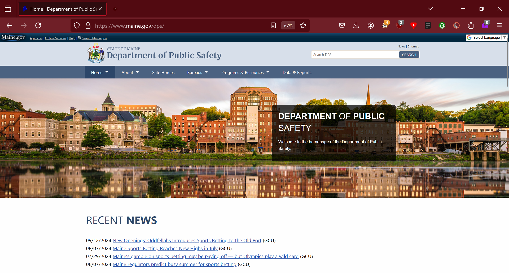

Home > Gallery > Maine Department of Public Safety

Maine Department of Public Safety - 2023
The DPS migration project has been my largest and most intensive project to date. It took the majority of the year to complete. The migration went from raw HTML in Dreamweaver to Drupal 9.
I designed one large homepage and five small homepages for different bureaus in similar styling for this project. I also migrated each bureau's content over. These include Capitol Police, Gambling Control Unit, Highway Safety, Maine Criminal Justice Academy, and Maine Drug Enforcement Agency.
I found it very important for my designs to have unity, although I did not design every migrated bureau, and not every bureau was interested in migrating to Drupal. My coworker and I did our best to ensure that our designs had the same look and feel, so that every bureau still feels like a part of the new DPS design, right up until the user discovers a 20 year old webpage.
The inspiration for this website pulls from Inland Fisheries and Wildlife, as well as the Office of the Governor. The Gambling Control Unit was my first design, and I was still getting a feel for how I wanted it to look. Shortly after release, Twitter rebranded to X and made embeds a premium feature. I have not yet been able to adjust the design for either shortcoming. Naturally, I am most pleased with the Bureau of Highway Safety, which was my final design.
I won two awards for my main homepage design. I earned a silver award from w3 and an honorable mention from MarCom under the Government category.